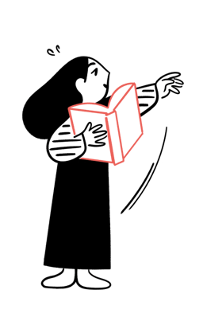
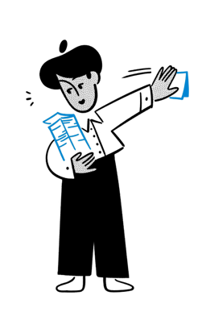

A plataforma de IA para profissionais de saúde — médicos, enfermeiros, fisioterapeutas e pesquisadores — que transforma experiências clínicas em ciência publicável. Do formulário ao DOCX em minutos.
Sem cartão de crédito · 1 relato grátis/mês · Cancele quando quiser
Descreva o caso no formulário estruturado. A IA redige a narrativa, aplica o CARE 2013, busca referências no PubMed e gera o DOCX — qualquer profissional de saúde pode publicar ciência.
Do relato de caso ao protocolo clínico, com IA que entende o fluxo real do profissional de saúde — médico, enfermeiro, fisioterapeuta ou pesquisador.
Formulário guiado com agentes de IA que preenchem, revisam e pontuam seu caso usando o checklist CARE 2013 automático. Exporta em DOCX com formatação ABNT.
Explorar →PRISMA 2020 automatizado com busca em PubMed, screening por IA, extração de dados e geração do diagrama de fluxo. Integração com Mendeley e Zotero.
🔜 Em breve Entrar na lista →
Gere protocolos baseados em evidências com suporte a guidelines internacionais (AHA, ESC, USPSTF). Revisão automática com IA e controle de versões.
🔜 Em breve Entrar na lista →
Match inteligente com periódicos indexados no Scopus, SciELO e PubMed. Formatação automática por journal, carta de apresentação e submission package.
🔜 Em breve Entrar na lista →Agentes de IA especializados trabalham em paralelo. Você acompanha cada etapa em um board visual — do intake ao DOCX final.
CaseOS substitui o Word, Mendeley, planilha de checklist, template ABNT e o processo manual de submissão — para qualquer profissional de saúde que queira publicar ciência.
"Antes eu levava 3 semanas para preparar um relato de caso digno de submissão. Com o CaseOS, fiz o mesmo em 4 horas. O CARE Score saiu 94/100 na primeira tentativa."
O CaseOS aplica automaticamente o checklist CARE 2013 usado pelos principais periódicos internacionais. Cada critério é avaliado por IA multi-agente com Claude, GPT-4o e Gemini.
"O CaseOS transformou a forma como orientamos residentes. Em vez de 3 rodadas de revisão, o CARE Score automático entrega feedback instantâneo com sugestões específicas. Publicamos 4 casos em 2 meses."
"Sou enfermeira e sempre achei que publicar era coisa de médico. O CaseOS me mostrou que qualquer profissional de saúde pode produzir ciência. Meu primeiro relato foi aceito no primeiro periódico que tentei."
"Como coordenador de pesquisa, precisava de uma solução que escalasse. O CaseOS permite que 12 residentes trabalhem em paralelo, cada um com seu pipeline. O dashboard de acompanhamento é impecável."
Comece grátis. Escale quando publicar mais. Sem surpresas na fatura.
Para quem quer experimentar a plataforma e publicar seu primeiro relato.
Para quem publica com regularidade e quer qualidade sem complicação.
Para pesquisadores ativos que precisam de volume, qualidade e velocidade.
Para hospitais, faculdades e programas de residência com múltiplos usuários.
Comece agora com 1 relato grátis. Nenhum cartão de crédito necessário.
Criar relato grátis →Claude · GPT-4o · Gemini · PubMed · ABNT · CARE 2013